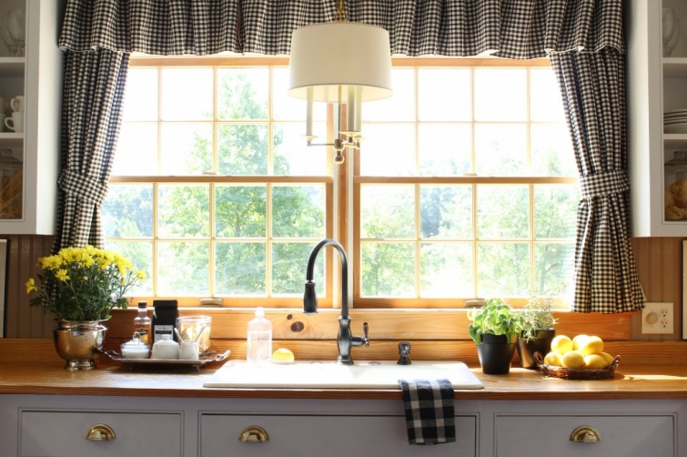
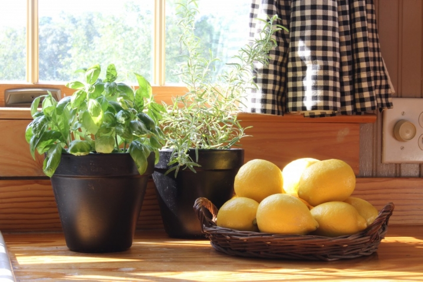
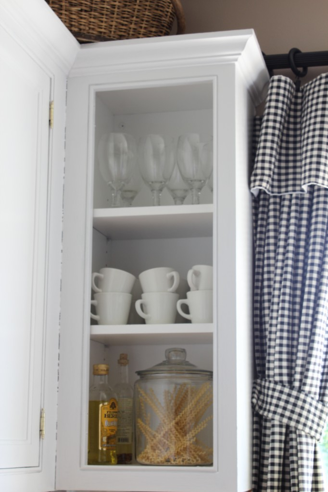

.png)
.PNG)
.PNG)
.PNG)
.PNG)
.PNG)
.JPG)
.JPG)
.PNG)
.PNG)


The other day when we looked at kitchen styling, my dear friend Judy from Gracious Southern Living, commented about the vignettes that I have here in my kitchen. So today, I thought we would look at how well things can be copied. I’m a thief. Yes, I will admit it. 🙂 The reason I was able to break all of those photos down into their components is because I have to do that in order to steal from them! Yes, sad I know.

We have already looked at this whole kitchen, but it was a quick twirl around the room. (here) We have not zoomed in on the little areas to see the vignettes. Let’s take it a little slower here today to see them. What has been copied in these little spaces?
Well…as you face the sink, this is the cabinet on the upper left. Like many people have previously done, we took the door off of it so that we might have some open cabinetry. You see glassware, stacked cups (from Williams Sonoma), olive oils, and a jar of pasta. All stolen ideas.

This is the cabinet on the other side with its glassware, stacked bowls, olive oils, and jar of pasta. More thievery. (Can you tell that we like Italian food?)
Below this cabinet is the area with the jars of sugar and flour and a small portion of my cookbooks….all copied ideas. The other cookbooks are in the cabinet in the dining area and in bookshelves in the greatroom. Where do you keep all your cookbooks?

The other end of this little vignette has a basket with cooking magazines, string, and scissors. And then there are the crocks of cooking tools like we looked at in several of the kitchens the other day.
Now let’s take a closer look at the little desk area. I have a difficult time photographing this space because it never gets direct sunlight. This lower part has a chalkboard that I normally keep phone numbers on (took them off for privacy here). You know a zillion folks have chalkboards in their kitchen. It also has a desk organizer (Pottery Barn) that holds a notebook of menus from restaurants we like and coupons…nothing original here.

You can see more cookbooks and assorted bowls and food items in the cabinet above it. You have seen plenty of displays like this I am sure. We even commented on the pretty packaging in one of the kitchens we looked at the other day.

Now moving over to the island. There is a small area below the plate rack with a lamp and more ….jars! These hold scoops and cereal, and there are other items standing ready for breakfast. Lamp in the kitchen, plate rack, white dishes, jars…copied, copied, copied.

Here is a closer look at the area for all you blind people like me.

On the other side of the refrigerator is a different plate rack below a cabinet that has yet another glass door. I have assorted stacked plates, food items, and little pitchers holding silverware. You’ve seen that in other kitchens before haven’t you?

This side of the kitchen is set up for everything you need for coffee. Coffee bars are all over Pinterest. Wanda, a dear reader here, commented on the post the other day asking where the coffee pot and toaster were in these neat little vignettes. I thought that was a very good question. I think the secret to making your coffee pot attractive is to pair it with a tray holding all the things you need to go with it. I like to try to think “practical” and pretty in styling an area….it’s got to work for your everyday life.

And here’s a little closer look for us blind folks again.

And to answer Wanda’s toaster question, if I were doing an area with a toaster I might put a basket with our bread in it beside it, or maybe a pretty butter dish,a beautiful jar of jelly or preserves, and a little pitcher or jar holding a collection of butter knives all on a tray. Perhaps that would make it more attractive.
Now we are back to where we started. If you were real observant you noticed that I moved that tray of coffee accessories in the photographs of this room. 🙂

As you can see, I have borrowed styling ideas from other kitchens…the stacks of plates, the jars, the cookbooks, the crocks of cooking tools, the displayed foods, and more. All of these ideas came from something I saw somewhere and decided that it was worth doing in our kitchen here.
So…are you a good thief borrower of ideas?


.PNG)
It is ME again! As I stalk your archives I noticed the black gingham curtains in your kitchen. I have cornice boards (do they still call them that?) covered with black gingham in my kitchen with gold mustardy (?) walls. I didn’t think alot about that choice when I made it. Now I realize that black gingham can go with ANY paint choice. I had no idea I was so smart! 🙂
————————————————————————-
Susan – I have always loved gingham, and in the last few years put the black gingham most everywhere in the house. You are so right…it goes with practically everything..which allows me to redecorate as much as I want.): And yes, you are so smart!!
Kelly
Hi, I’m bj and over here to steal ideas from YOU. :))
When I mentioned I was doing black and white photos of my kids and grandkids, Stacey at Poofing Pillows said I should come see your black and whites.
Well, right off the bat, now I want those little black and white kitchen curtains. Did you make them, order them, steal them somewhere?:)
Going to search thru and find more of your photos in b&W ….
xo bj
————————————————————————-
You are too funny BJ! Sorry, but I made the black and white curtains in the kitchen (and almost all of them in the house.) I do believe Country Curtains sells check panels in short sizes though. The check in their “Cabin Check” is a little larger than mine. I have ordered those panels in the long lengths from them for the windows in my sons’ room and then lined them when I get them to give them some added weight.
If you look through any of the photos of the house, you will see the black and white photographs. They are EVERYWHERE!
Thank you for reading here and leaving your sweet (and funny!) comments. And I need to thank Stacey for sending you my way. You folks are awesome!
Kelly
I love your home. You have done a great job! Your family photo’s in your kitchen are such a great idea. I cannot find on your post about the kind of frames you used. Would love to find out where I can get some.
Thanks
Carol
————————————————————————-
Carol, you are my 500th comment since starting the blog! Wow! Thank you for your kind words about the house. I can’t remember which post has the frame info (must be old age!) but they all came from Michaels. Michaels doesn’t offer them online but the company in this link does, and you can order them from here: http://www.aifriedman.com/browse.cfm/mcs-format-museum-collect/2,393.html Hope that helps!
Kelly
What fun to see The Stuffed Griffin on your shelves! We Griffinites still love it 36 years later. In fact, so do my daughter and her friends! She just made the squash casserole for her husband’s family on a beach trip last week where it got rave reviews! Love having my cookbooks out in the open too.
Happy cooking!
Elaine
————————————————————————-
Oh wow Elaine! A Griffinite…you are in Georgia too! That is a great cookbook…a truly usable one with recipes that are realistic for cooking without a zillion strange ingredients. Thank you for stopping by the blog today, AND thank you for leaving a comment!
Kelly
Hi Kelly, your kitchen is so pretty!! and so welcoming. You’re very talented! We all see the beautiful magazine & Pinterest pictures, but can we do what you’ve done? You’ve got the gift! I love how you did your kid’s pictures at the coffee bar.
have a great week!
Robin
———————————————————————-
Robin – Thank you for you kind comments about the kitchen. I am glad you like it. I think I am addicting to using black and white photographs! They are everywhere in this house.
Have a great day.
Kelly
Hey Kelly! What a gorgeous, inspiring kitchen! I’d be channeling Giada everyday if I had a kitchen like that! And you know they say that plagiarism is the highest form of flattery!
You have an awesome blog – I can tell I’ll be spending alot of time there. Your newest follower – Jaye
———————————————————————-
Hi Jaye! “Channeling Giada” – now THAT’S funny! Your comments are too sweet. Thank you for visiting my blog, and I am so happy you are my newest follower! Please do come back again.
Kelly
Oh I am such a thief! I love the cookbooks on the counter…maybe if I do that people will think I actually cook 🙂 Very nicely accessorized!!!
————————————————————————-
That’s too funny Sherry! If I saw cookbooks out on the counter, I would think the person cooked. So yes, you can fool some folks with that! Thank you for stopping by today.
Have a wonderful weekend!
Kelly
I love your little cereal containers. Brilliant! We do toast and eggs most days, so I think I need to get a butter crock and do a little toaster tray like you suggested to Judy. Vignettes are fun to see; much more personal than the quick sweep of the whole room. A person’s particulars show in the details. I like your particulars : )
———————————————————————-
Julianna would you just come make us breakfast each morning?! We are doing good to do cereal around here and get to work on time, so a cooked breakfast of eggs and toast would be a treat! Your sweet compliments are very much appreciated. Thank you for reading and talking with us!
Kelly
Hi Kelly,
Your kitchen is great and very well laid out. I love “borrowing” ideas from people that have such great ones! I have less counter space than most and my husband is a huge coffee fan so we have a coffee maker and espresso maker on what little precious counter space we have. That said, I have a little lamp and an old champagne bucket with kitchen utensils…practical and pretty, my thoughts exactly. Fun post, thank you.
Karen
———————————————————————-
Oh Karen, what a smart and wonderful idea to use a beautiful champagne bucket! Even with little counter space, your coffee and espresso maker still take dips on the space. That’s funny (but so true in many kitchens!) I’m happy you enjoyed the post. Thank you for your compliments.
Have a great weekend.
Kelly
An honor for me as well to have my name in print on your blog! I have so enjoyed emailing you and receiving your kind responses? Thank you for the styling answers to my 2 questions. I am the coffee drinker and my husband is the toast maker! We have a small kitchen, and ai am constantly stalking blogs to “figure it out!”!
Can you tell me the idea for the kitchen curtains? I am also a sewer and have made all the drapes for my home!
Bless you!
———————————————————————
Hi Wanda! Your questions were good ones, and I feel like “real life” is often ignored in photo styling so I wanted to address them here. I am not sure what you are exactly wanting in curtain ideas. I made mine out of straight panels – both the drapes and the valance. The drapes are just shirr on the rod kinds (on a rod behind the valance) and the valance is on clip on rings. (After my mom and I sewed on 112 rings one year, we were thrilled when the clip on kind came out!) All of my drapes are lined with twin size white sheets from Walmart. I just line up the hem of the sheet with the hem of the drape, and then cut it to fit and sew. Isn’t sewing such a great skill to know when it comes to making your own drapes? That is wonderful that you have made all of yours.
Kelly
P.S. I love love love lamps in the kitchen (I have one and would love to find room for another… 🙂
C
Kelly, I am loving these posts. I am definitely a “borrower.” It all started years ago with magazines, then books, then blogs and now Pinterest! I have to say that your blog inspired me to find Heather Bullard’s and I totally copied her basket with breadboards, bowl of lemons vignette. Today, I am on to imitating your coffee bar! I tried to do the cereal in the glass jars thing, but my kids insisted that the cereal became stale too quickly, so I have filled my jars with corks, cupcake liners (a Pinterest “steal”) and cinnamon sticks, respectively. Also, we keep our toaster in a metal 9×13 pan under the counter behind closed doors, and bring it out each morning. It’s not really that big of a pain, and it means virtually no crumb clean up–just dump out the pan before putting it away. Have a great day!
————————————————————————–
Hi Paula! We ARE bombarded with ideas everywhere we look. Yay! I’m glad I could send you over to Heather’s. How wonderful that you were able to copy that lovely vignette! Our coffee bar is very well used so go right ahead and steal one. (My husband and I are both coffee addicts.) Our cereal seems to disappear quickly so it hasn’t gone stale on us. My husband and son like BIG servings. They do make jars with the lids that seal if you wanted to do that, but what you did sounds great too. Your toaster idea is a very good one! Hope folks are reading the comments to copy you on that.
Kelly
Hi Kelly,
Thank you so much for the wee peek into your kitchen. Collecting cookbooks is a disease (or maybe just a ‘condition’) of mine – I have hundreds of them (according to hubby). We live in such a small house that every space is used and so my cookbooks are on open shelving above the stairs that lead to the basement from the kitchen. Those shelves are now full so my new cookbooks are spilling into other nooks and crannies close to the kitchen.
I have a little grouping of coffee/tea items beside the stove and now I am going to re-look at it and perhaps add a little tray to contain it. Thanks for reminding me!
I’m thinking of taking a cupboard door off but not too too sure which one… the most obvious is a narrow tall cupboard next to the sink which holds all of our cups and mugs. Hmmmm…
Thank you again sweet Kelly for sharing your home and ideas with us (oh and, philosophically speaking, are there any truly original ideas in the world today?? I wonder?!?).
Have a lovely weekend
Cath
————————————————————————-
Cath, I have an addiction to cookbooks too, but your “disease” seems to be “worse” than mine. Wow! You must have a lot. Displaying your cups and mugs in an open shelf cabinet would be pretty. Hop on it! I tend to think like you philosophically (remember I have a philosophy grad son :)) that there really are no original ideas…seems like everyone has probably done whatever it is at some time before. It just happens to be fresh to our eyes – and that’s what counts. (now I’m going preacher mode on you!).
Kelly
You have a lamp in your kitchen!!! I’m going to show Scott!
Oh, sorry…Hi Kelly, You always post such wonderfully witty posts! You seem to have quite a bit of room in your kitchen, I’m turning green! I really love all your ideas, even though they’re “borrowed” they are still quite original and very lovely. My cookbooks are tucked away in a cupboard above the stove…I wonder if I could take the doors off…I am going to buy a small basket just like yours for my lemons, do you know where I can steal(oops) one?
————————————————————————
Hey Kim! This kitchen is “just right” in size to me…not too big…not too little. Thank you for the compliments! You should take the doors off to display your cookbooks. (If you don’t like it, you can always put them back on.) My little basket came from a tiny shop here, but there are similar ones at Nell Hills. Look here to see if this might work: http://nellhills.com/store/index.php?main_page=product_info&cPath=65&products_id=719 Thank you for reading and leaving your (always funny!) comments.
Kelly
Your kitchen is absolutely wonderful. If feels warm and inviting. I love all your little vignettes. They make it homey and REAL….and I am all about real. You can borrow, beg, or steal ideas but in the end you have to know what to do with those ideas….and you DO! Blessings- xo Diana
——————————————————————–
Aw Diana! Your words are too kind! Yep, the kitchen is all real..and right now a REAL mess with lunch! Ha ha. Thank you for saying it feels warm and inviting. That is one of my goals for this house. I can tell that I have succeeded in that goal when a bunch of teenagers feel welcome enough to raid the kitchen without asking. Guess that is a good thing??
Thank you again for leaving your sweet words.
Kelly
Another proud thief here! In fact, people who come to our home often tell me I’m a great decorator…the truth is that I have NO original ideas. Only stolen or borrowed ideas.
Right now I’m working on stealing your black and white picture vignettes. Thanks for the frame info. 😉
———————————————————————-
Stacey, you just go right ahead and steal steal away! You are still a “decorator” even if you do that. Glad you can use the black and white photo idea. I think all of the ones in the kitchen and dining area are of the children on their birthday blowing out the candles. Have a good weekend!
Kelly
Yes. Its so pretty. Wish I had a large counter area like that. Kelly, Do you like the open cabinet? I tried that also, but all the holes inside showed(the holes where you can adjust the shelves} I thought that it looked bad, so I put my doors back on. Also, my coffee pot is under my counter like yours is, but everytime I make coffee, I have to pull it out, in order to pour the water in. Do you have to do that also?
———————————————————————–
Hi Carol Jane! I do like the open cabinet, but there is no way I could live with all of them like that. I have to have some place to hide the “not so pretty” stuff. And we do use the things that are in the open ones. The holes are showing in mine too. I guess I just ignore it. We also pull our coffee pot out to put the water in and then slide it right back under…not a problem for us. What IS a problem is that we need to replace that coffee maker since it takes 45 minutes to make just one pot of coffee! Don’t know what in the world is wrong with it. Thanks for jumping in the conversation here!
Kelly
kelly!! don’t be modest, stolen or not, your kitchen styling is perfect and looks all you!! so pretty!! it’s not that easy to pull off, you’ve got a gift!! 🙂 xo
———————————————————————
Thank you for your sweet compliment Tessa! It’s much easier to style when you can already see what you want the area to look like in reality and not just in your head. Hope to make your decadent chocolate cookies this weekend so that I can munch on them while trying to catch up on some work. Thanks for a great recipe at your post!
Kelly
I love all your pencils! And your cereal bar with the lamp is so cute…and of course, the plate rack…I guess I love it all, actually! 😉
———————————————————————–
Goodness Aimee! I didn’t even notice the pencils! That cereal bar is handy dandy. Our pantry is overflowing so it is good to be able to not have to worry about putting the cereal boxes in there. Thank you for your always sweet comments! Have a great weekend.
Kelly
I’d gladly be your partner in crime – love the ideas you “stole”.
So glad for the close-ups, you can really examine and get ideas.
You have great taste and am looking forward to what you select next. Thanks and have a great day.
————————————————————————
Thank you Jean! I figure there are a lot of “partners in crime” out there. (Great way to put it!) It is really hard to me to find something original these days, but there are so many “old” ideas that I like that originality is really not something I am worried about finding.
Kelly
What an honor to have been mentioned in your post Kelly!
And yes, I am a thief! I guess I subscribe to the notion that imitation is the sincerest form of flattery…or at least I tell myself that!
I have very little counter space but I can’t help myself, I want pretty vignettes, forget practicality and efficiency! Lamps, plate racks, stacks of plates, right up my alley…love all your vignettes, guess I’m going to have to show you some of mine.
Have a wonderful Friday sweet friend! (Do you think I could have used a few more exclamation points?)
————————————————————————-
Well Judy, I am glad you are honored! You ARE going to have to zoom in on your vignettes too. I have to have some counter space to work on because I am a VERY messy cook. You have a great Friday too girl! (and it is perfectly okay for you to use as many exclamation points as you like!!)
Kelly